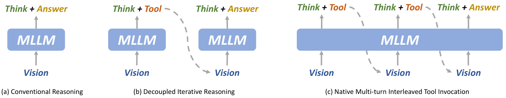
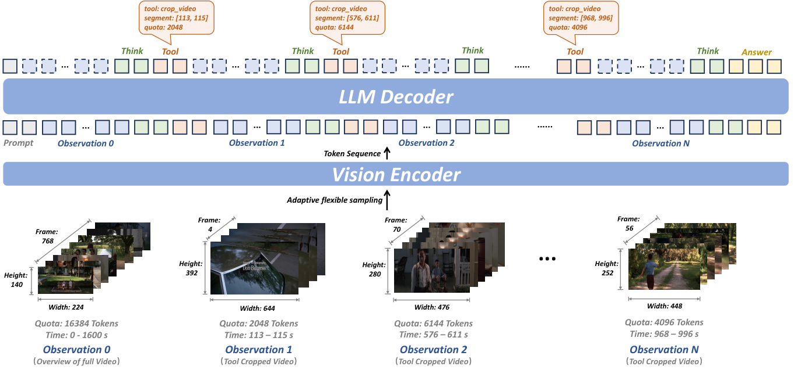
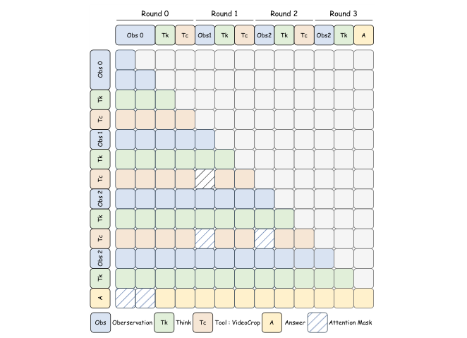

五分钟重建
长视频中的关键证据可能只出现几秒。均匀抽帧会漏掉它，把找线索与回答拆成两套流程又会丢上下文。Video-o3 把工具调用、证据与推理写在同一个上下文里。
先看全局概览
拿到问题后读低分辨率全局视频，判断缺少什么证据。
按需调用 VideoCrop
生成时间范围与视觉预算，裁剪结果加入当前上下文。模型再决定继续找还是回答。
训练分工与效率
SFT 对 10% 工具数据施加 TDAM；RL 用答案奖励、线索得分与轮数衰减约束轨迹。
具体例子（教学假设）：问“谁先拿起钥匙”。概览只看到两人走动，模型可请求查看桌边那几秒，再结合新证据回答。若裁剪仍没显示关键动作，可以继续调用，但受轮数与上下文预算限制。
边界：TDAM 是训练期分工：工具规划阶段遮局部裁剪，回答阶段遮全局。它只用于部分数据，不是要求推理时永远禁看全局。找到线索也不保证推理正确。
换个条件看机制
删除轮数衰减，是否只会得到更好的答案？
论文消融中工具调用更多，准确率反而下降。更多探索会增加成本，也可能使上下文碎片化。这个观察不表示每个问题都应只调用一次。
2026-10-04：讲解与练习待试用，本次未进行理解检验；此处不记录复测通过。
论文图解



一页看懂
02问题
长视频两个老毛病：均匀采样把稀疏关键证据淹没在冗余里（关键 2 秒占 10 分钟视频的极少数帧）；已有「找线索 + 答题」方案两阶段割裂，上下文不共享、手工规则控时机，做不了多线索联合推理。
方法
一个侦探全程同一个记忆：单一共享上下文里循环「思考 → 调 VideoCrop 裁剪放大 → 再思考」，工具调用由模型自己生成的文本触发（原生交错），配 TDAM 防注意力分散、VTGR 控效率。
结果
MLVU 72.1%、Video-Holmes 46.5% 均 SOTA；推理 10.2s 比解耦方法快 46%（共享上下文吃 KV Cache 增量计算红利）。代价：8 轮上限、工具单一。
Video-o3 拿到问题后，在同一上下文里交替推理与裁剪视频，让新找到的证据继续参与回答。
关键机制：回合制找线索循环
03回到思考继续下一轮，或直接 <answer> 终止。评估上限 8 轮，视觉上下文上限 32k token。训练数据 Seeker-173K 自造：线索定位 → 有效性验证 → 轨迹生成 → 逻辑一致性检查。
关键机制：TDAM 与 VTGR，两个问题两个解法
04共享上下文的两个核心问题，各配一个解法：注意力分散（全局/局部/推理文本混杂，更严重的是 Fake Thinking：工具找对了证据，答题时却被全局模糊印象带跑，推理对了答错了）与上下文效率（每调一次工具 token 膨胀、不知何时停）。
| 解法 | 针对 | 怎么做 |
|---|---|---|
| TDAM（SFT 阶段硬掩码） | 注意力分散 + Fake Thinking | 生成工具调用时禁看局部裁剪（只靠全局做定位规划）；生成最终答案时禁看全局（只靠工具局部证据作答）。只对 10% 数据加掩码：全加会丧失全局+局部综合能力（消融 20%/30% 反降） |
| VTGR（RL 阶段奖励） | 上下文效率 | R = r_a · (1 + β) + r_f。β 由 Hybrid Clue Score（裁剪区间与真实证据的 IoU/IoP/IoG，奖「找得准」）乘 Turn Decay（轮数衰减，奖「找得快」）构成；答错则 β 不生效，over-turn 轨迹不产梯度 |
关键数字
05| 维度 | 结果 | 附注 |
|---|---|---|
| 消融：删 Hybrid Clue Score | 调用率 + 准确率同时暴跌 | 「找得准」的奖励是工具使用的动力源 |
| 消融：删 Turn Decay | 调用率升、准确率降 | 过度探索碎片化上下文 |
| 消融：省 SFT 冷启动 | RL 出现 dip-and-recover | SFT 教协议，RL 再自我改进 |
| 局限 | 8 轮上限 / 工具单一 | 极长电影可能不够；只有 VideoCrop；Fake Thinking 未根治（TDAM 仅 10% 数据） |
卡壳点
06Q：共享上下文带来的两个核心问题分别是什么？各对应什么解法？（Q1 漏掉的半问）
(1) 注意力分散（全局/局部混杂 + Fake Thinking）→ TDAM（10% 掩码）。(2) 上下文效率（每调一次工具 token 膨胀 + 不知何时停）→ VTGR（$S_{clue}$ 奖励裁得准 + $\gamma$ 惩罚轮数多）。两个问题两个解法是配对的。
Q：VST 和 Video-o3 的推理时机分别放在哪里？（Q3 漏掉的半问）
VST = 查询前（播放期边看边想写笔记，查询到直接读笔记秒答）；Video-o3 = 查询后（拿到问题后在单一上下文里多轮调工具找线索，每轮裁剪+推理交替）。一句话：VST 是"先把笔记做好，问就秒答"；Video-o3 是"拿到问题才去翻监控放大看"。
Q：两者组合后除了证据冲突还会引入什么结构性问题？（Q3 漏掉的半问）
VST 的"查询即答"和 Video-o3 的"多轮探索后才答"在响应时机上逻辑冲突：需要设计新的统一调度（何时秒答、何时探索），和 VideoChat3+VST 组合时的问题一样。
关联与来源
07RELATED
SOURCE
7R3CXS5H / MT7328F2 / 3BIVY2LN